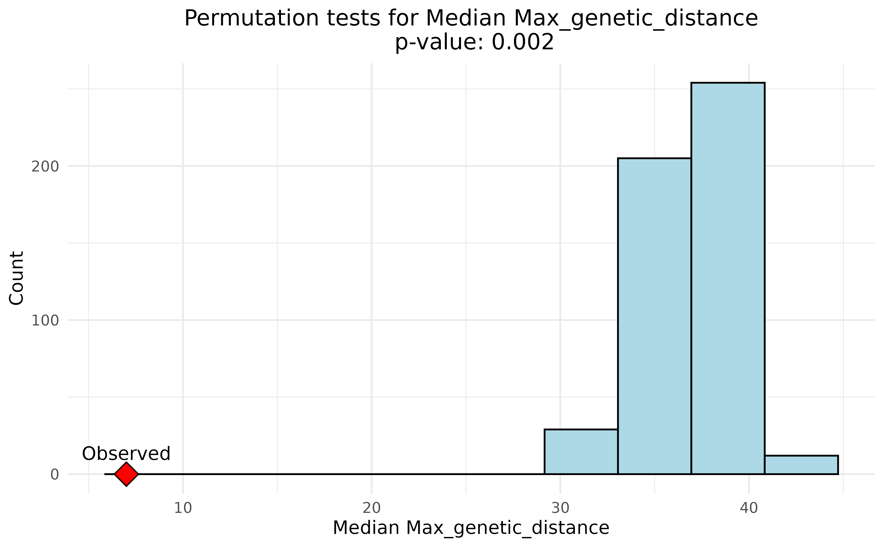
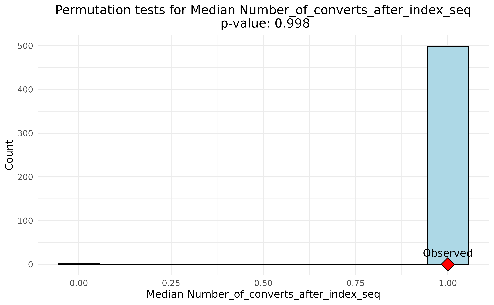

This vignette provides an overview of the permutation tests for
statistical significance in the transclust package. The
package includes functions for performing permutation tests to assess
the statistical significance of clustering results. These tests can be
used to determine whether the observed clustering is significantly
different from what would be expected by chance.
Loading and preparing data
These steps are the same as those in the “Introduction to transclust”
vignette. The transclust package comes with a sample
dataset that can be used for demonstration purposes. The dataset
contains epidemiological information for a set of isolates. To load the
dataset, we can use the following command:
load(system.file("extdata", "example.Rdata", package = "transclust"))We first read in the sequence file which has been prepared using the
procedure described in Hawken et al.
(2022). We can read in the sequence file using ape’s
read.dna function:
dna_aln <- read.dna(system.file("extdata", "example.fasta", package = "transclust"), format = "fasta")Now that the sequence file is loaded, we can extract the variable
positions in the alignment. The dna_var_pos variable
contains a logical vector indicating which columns in the alignment are
variable. The dna_pt_labels variable contains the labels
for the sequences in the alignment, and trace_mat is a
matrix containing the trace data for the isolates. The valid set of
labels is determined by checking which labels in the
dna_pt_labels variable are present in the
trace_mat matrix.
# Get all variable positions in the alignment
var_pos <- apply(dna_aln, 2, function(x) sum(x == x[1]) < nrow(dna_aln))
# Only keep those labels that are in the trace matrix
valid_labels <- dna_pt_labels[labels(dna_aln)] %in% colnames(trace_mat)We can then subset the alignment to include only the variable positions from the isolates with valid labels:
dna_var <- dna_aln[valid_labels, var_pos]We then use the helper function get_snp_dist_matrix() to
calculate the SNP distance matrix for these isolates:
snp_dist <- get_snp_dist_matrix(dna_var)The snp_dist variable contains the SNP distance matrix,
which is a square matrix where each entry represents the number of SNP
differences between two isolates. The diagonal entries are all zero, as
they represent the distance between an isolate and itself.
Clustering
transclust offers two methods to determine transmission
clusters: these include a hard SNP-threshold based approach and a
threshold-free shared-variant based algorithm as described in Hawken et al. (2022). In this vignette, we will
focus on the latter method for statistical analysis. We first create a
phylogenetic tree using the SNP distance matrix and use that along with
the epidemiological data to get the transmission clusters:
phylo_tree_pars <- get_phylo_tree(dna_var, snp_dist, "pars")
#> [1] 1
#> Final p-score 2122 after 8 nni operations
clusters <- get_tn_clusters_sv_index(
dna_var, snp_dist, ip_seqs_3days, ip_seqs,
dna_pt_labels, dates, phylo_tree_pars
)This gives us the clusters that we can now further use for statistical analysis.
Permutation tests
The transclust package includes a function that performs
permutation tests to assess the statistical significance of clustering
results. A list of several important prooperties of the clusters are
computed over the observed data and the permuted data. The permutation
test is performed by randomly permuting the labels of the isolates and
recalculating the clustering results. This process is repeated a
specified number of times to generate a distribution of clustering
results under the null hypothesis. The observed clustering results are
then compared to this distribution to determine whether they are
significantly different from what would be expected by chance.
For the tests to be informative, the clusters have to be permuted with certain constraints. We can divide our patients into two “classes”: index and convert. Index patients are those who are the first in a cluster, and convert patients are those who are infected by an index patient. The permutation tests are performed by randomly permuting the labels of the isolates while not changing the proportions of index and convert patients in the clusters. This is done to ensure that the permutation tests are meaningful and take into account the structure of the data.
Because the permutation tests are computationally intensive and can
take time, for better performance they can be run in parallel on
multiple cores on *nix systems (Windows does not support parallel
execution in this manner). However, since this is a vignette that has to
on all platforms, we will only run the test on a single core. The
cluster_property_perm_test() function takes the following
arguments:
nperm <- 500
perm_props <- cluster_property_perm_test(
clusters, trace_mat, dna_pt_labels, ip_seqs, ip_seqs_3days, dates, snp_dist,
nperm = nperm, floor_trace = floor_mat, room_trace = room_mat, num_cores = 1
)The perm_props object contains the results of the
permutation tests, including the observed and permuted values for each
property. The cluster_property_perm_test() relies on the
cluster_properties() function to calculate the properties
of the clusters along with some additional properties that are
calculated after the permutation tests. How do we know which properties?
We can see what the properties are by looking at the
perm_props object:
colnames(perm_props)
#> [1] "Median Number_of_patients"
#> [2] "Median Number_of_start_indexes"
#> [3] "Median Number_of_non-start_indexes"
#> [4] "Median Number_of_study_start_indexes"
#> [5] "Median Number_of_converts"
#> [6] "Median Number_of_initial_converts"
#> [7] "Median Number_of_later_converts"
#> [8] "Median Cluster_duration"
#> [9] "Median Mean_genetic_distance"
#> [10] "Median Median_genetic_distance"
#> [11] "Median Max_genetic_distance"
#> [12] "Median Number_of_converts_after_index"
#> [13] "Median Number_of_initial_converts_after_index"
#> [14] "Median Number_of_converts_after_index_seq"
#> [15] "Median Number_of_initial_converts_after_index_seq"
#> [16] "Median Number_of_converts_with_source"
#> [17] "Median Number_of_initial_converts_with_source"
#> [18] "Median Number_of_converts_with_floor_source"
#> [19] "Median Number_of_initial_converts_with_floor_source"
#> [20] "Median Number_of_converts_with_room_source"
#> [21] "Median Number_of_initial_converts_with_room_source"
#> [22] "Median Time_to_first_acquisition"
#> [23] "Median Time_to_last_acquisition"
#> [24] "Median Median_time_to_acquisition"
#> [25] "Median Time_from_index_to_first_convert"
#> [26] "Median Time_from_index_to_last_convert"
#> [27] "Per convert Number_of_converts_with_source"
#> [28] "Per convert Number_of_converts_with_floor_source"
#> [29] "Per convert Number_of_converts_with_room_source"
#> [30] "Per convert Number_of_converts_after_index"
#> [31] "Per convert Number_of_initial_converts_with_source"
#> [32] "Per convert Number_of_initial_converts_with_floor_source"
#> [33] "Per convert Number_of_initial_converts_with_room_source"
#> [34] "Per convert Number_of_initial_converts_after_index"
#> [35] "Fraction of clusters Number_of_converts_with_source"
#> [36] "Fraction of clusters Number_of_converts_with_floor_source"
#> [37] "Fraction of clusters Number_of_converts_with_room_source"
#> [38] "Fraction of clusters Number_of_converts_after_index"Lets choose to look at one of these, the
"Median Max_genetic_distance". This is just the median of
the maximum genetic distance between isolates in a cluster. We can plot
the observed value against the permuted values to see how it
compares:
prop_name <- colnames(perm_props)[11]
perm_vals <- perm_props[1:nperm, prop_name]
observed_val <- perm_props[nperm + 1, prop_name]
upper_p <- (sum(perm_vals <= observed_val) + 1) / (nperm + 1)
lower_p <- (sum(perm_vals >= observed_val) + 1) / (nperm + 1)
prop_pval <- min(upper_p, lower_p)
ggplot(data = data.frame(x = perm_vals), aes(x = x)) +
geom_histogram(aes(y = after_stat(count)), bins = 10, fill = "lightblue", color = "black") +
geom_point(aes(x = observed_val, y = 0), shape = 23, size = 5, fill = "red") +
annotate("text", x = observed_val, y = 0.5, label = "Observed", vjust = -1) +
labs(
title = paste0("Permutation tests for ", prop_name, "\n p-value: ", round(prop_pval, 3)),
x = prop_name,
y = "Count"
) +
theme_minimal() +
theme(plot.title = element_text(hjust = 0.5))
We can see that the observed value is significantly lower than the permuted values, indicating that our observed clusters have mostly closely related isolates. The p-value is calculated as the proportion of permuted values that are less than or equal to the observed value. A low p-value indicates that the observed value is significantly different from what would be expected by chance. The p-value we see here is 0.01, which is lower than the commonly used significance level of 0.05.
What does this mean in this case? Well, the maximum genetic distance between isolates in a cluster is significantly lower than what would be expected by chance. This suggests that the clusters are made up of closely related isolates, which is consistent with the idea that they are part of the same transmission chain. This is an important finding, as it suggests that the clusters are not just random groups of isolates, but rather represent real transmission events.
Let’s look at another example, this time that is not statistically
significant. We can look at the
"Median Number_of_converts_after_index" property, which is
the median number of converts after the index case in a cluster. This
property is not expected to be significantly different from what would
be expected by chance, as it is not directly related to the clustering
results and is in fact a property of the underlying data. We can plot
the observed value against the permuted values to see how it
compares:
prop_name <- colnames(perm_props)[14]
perm_vals <- perm_props[1:nperm, prop_name]
observed_val <- perm_props[nperm + 1, prop_name]
upper_p <- (sum(perm_vals <= observed_val) + 1) / (nperm + 1)
lower_p <- (sum(perm_vals >= observed_val) + 1) / (nperm + 1)
prop_pval <- min(upper_p, lower_p)
ggplot(data = data.frame(x = perm_vals), aes(x = x)) +
geom_histogram(aes(y = after_stat(count)), bins = 10, fill = "lightblue", color = "black") +
geom_point(aes(x = observed_val, y = 0), shape = 23, size = 5, fill = "red") +
annotate("text", x = observed_val, y = 0.5, label = "Observed", vjust = -1) +
labs(
title = paste0("Permutation tests for ", prop_name, "\n p-value: ", round(prop_pval, 3)),
x = prop_name,
y = "Count"
) +
theme_minimal() +
theme(plot.title = element_text(hjust = 0.5))
Here we can see the p-value is very close to 1, indicating that the observed value is not significantly different from what would be expected by chance. This is because our permutations are designed to keep similar proportions of index and convert patients in the clusters, and so we would not expect this property to be significantly different from what would be expected by chance.
Thus the permutation tests provide a useful way to assess the statistical significance of clustering results, and can help to identify properties that are significantly different from what would be expected by chance, helping us to understand signatures of transmission in the data.